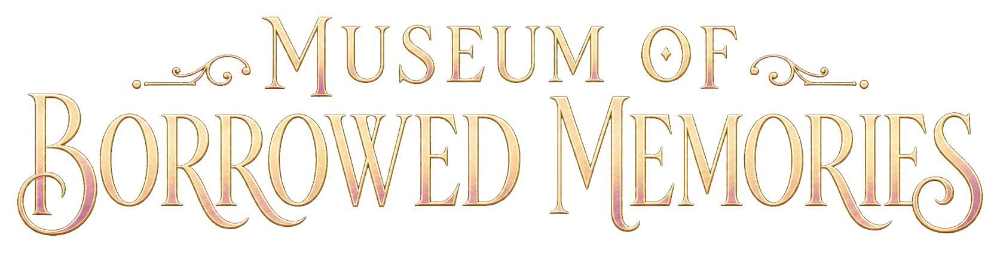

Memory Auditor Registry
Who enters the archive?
Choose your investigator. Your choice changes appearance, not the mystery.
Museum of Borrowed Memories
Main Gallery
Explore the gallery and inspect the exhibits.
The Raincoat
The Cracked Teacup
II
13
Floor Thirteen
III
The Glass Orchard
II
The Music Box
The Silver Umbrella
II
The Velvet Guestbook
E Inspect
WASD Move · E Inspect · J Journal